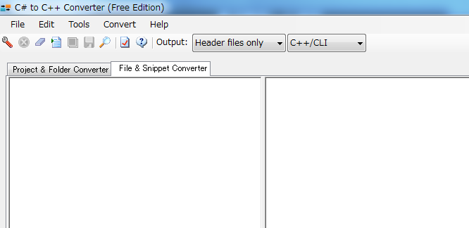
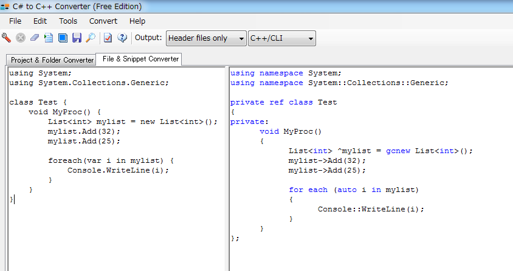

この説では、C#や.NETの知識はあるものの、C++やC++/CLIの知識はほとんど無い、という人が
ScenarioModを記述する上においてのノウハウや方法論の１つを提示しています。
ScenarioModはC++/CLIで構成されています。
この意味すところは、「.NET FrameWork」のほとんど全ての資産を簡単に利用できる。
ということです。
今やWindows上の資産や便利な機能は、 .NET FrameWork、「特にC#」を中心に展開されています。
「プロユースのC/C++はわかりません、でもC#なら簡単なGUIアプリなら作れます。」
という方向へと人々の傾向が変化していくであろうことは、疑いの余地がありません。
また、マイクロソフト自身がそのように誘導していますし、
その現象は、Windowsに留まず、Mac、Linuxへと波及してゆくでしょう。
(iPhoneやAndroidのある程度の規模のゲームは、UnityのC#で作られたものが多い)
では、C#の知識を持つ人が、
ScenarioModを記述する上で、その知識を活かすにはどうすれば良いのでしょうか？
ここでは、この点にフォーカスを当ててみます。
そこで管理人がお勧めするのが、「C# to C++ Converter」です。
このページ に 「Install C# to C++ Converter」というものがあります。
実はこれが非常に役に立ちます。
但し、新しすぎるバージョン20以降ではC++/CLIへの変換機能が失われてしまっているため、
C# to C++ Converter v17.x の利用をオススメします。
このツールは、C#のソースをC++/CLI へと非常に高い精度で変換できます。

完全なエラーのないソースであればあるほど、あるいは、
完成されたVC#のプロジェクトであるほど、正確な変換が可能となりますが、
部分的なソースでも、高い精度での変換が可能です。
下図のように左側に、C#のソースを記述します。
using System;
using System.Collections.Generic;
class Test {
void MyProc() {
List<int> mylist = new List<int>();
mylist.Add(32);
mylist.Add(25);
foreach(var i in mylist) {
Console.WriteLine(i);
}
}
}
図のように「C++/CLI」をコンボボックスリストから選択します。

using namespace System;
using namespace System::Collections::Generic;
private ref class Test
{
private:
void MyProc()
{
List<int> ^mylist = gcnew List<int>();
mylist->Add(32);
mylist->Add(25);
for each (auto i in mylist)
{
Console::WriteLine(i);
}
}
};
これがC++/CLIです。
Linqやdynaimicなど、C#4.0以降に付け加えられた機能を除けば、
C++/CLIは、C#の主要な文法にはほぼ1:1で対応しています、
又、ライブラリは同じものを参照しているわけですから、原則全て利用可能です。
C#の可変長引数なども問題なく変換出来ます。
using System;
using System.Collections.Generic;
class Test {
int MySumFunc(params int[] values) {
int Sum = 0;
foreach(int v in values) {
Sum += v;
}
return Sum;
}
void MyProc() {
MySumFunc(1,2,3,4,5,6);
}
}
同じように、ツールの左側に入力し、「C++/CLI」を選びなおしてみましょう。
(C++/CLIと見えてるなら、CTRL+Sボタンでも良い)
using namespace System;
using namespace System::Collections::Generic;
private ref class Test
{
private:
int MySumFunc(... cli::array<int> ^values)
{
int Sum = 0;
for each (int v in values)
{
Sum += v;
}
return Sum;
}
void MyProc()
{
MySumFunc(1,2,3,4,5,6);
}
};
本当にこんな記述が ScenarioModで使えるのでしょうか？
ScenarioModに貼り付けて、
「カスタム::On_プレイヤ担当ターン《メイン画面》() 」メソッド内から呼び出してみましょう。
int MySumFunc(... cli::array<int> ^values)
{
int Sum = 0;
for each (int v in values)
{
Sum += v;
}
return Sum;
}
void カスタム::On_プレイヤ担当ターン《メイン画面》() {
int sum = MySumFunc(1, 2, 3, 4, 5, 6);
デバッグ出力 << sum << endl;
}
なんということでしょう、なんという恐ろしさ。
余裕で動作します。
そうです、
これが「共通の.NETというプラットフォーム(CLR)を意識した言語同士だから持つ高い相互変換性」です。
しかし、１点問題があります。
それは.NET FrameWorkのString型(C#のstring=System::String)と、
ScenarioModで頻出するstring型(C++のstd::string)は「 全然違う 」ということです。
そこでScenarioModでは、この変換を容易にする仕組みが存在しています。
string nstr = "あああ"; String^ mstr = String←string(nstr);// C++のstring型から.NET FrameWorkのSystem::String型へ String^ mmsg = "あいう"; string nmsg = string←String(mmsg); // .NET FrameWorkのSystem::String型から C++のstring型へ
この点だけ注意すれば大丈夫です。
存分にC#で得たライブラリの知識を活かして記述できるはずです。